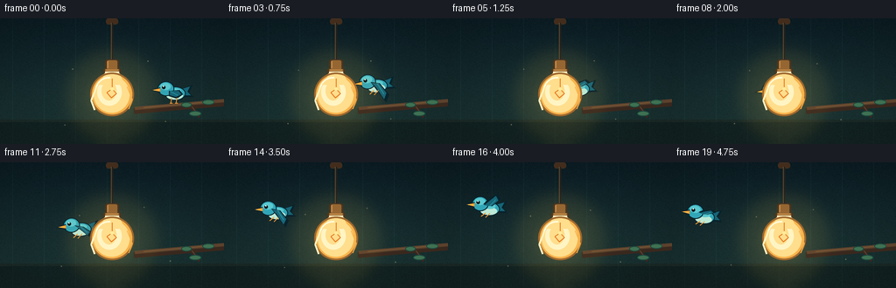
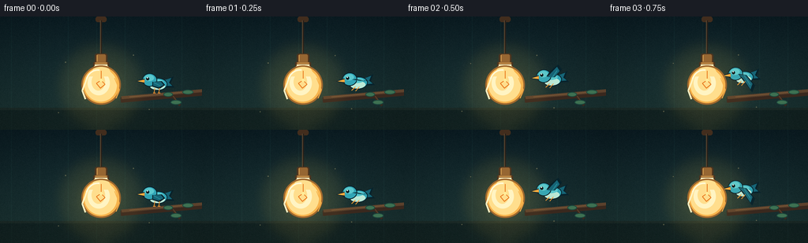

CODING AGENTS AS PIXEL WORLD MODELS
traex/DeepSeek-V4.1-Flash · dynamic_spatial_relationship_0043
点击播放 · 原生 RGB 像素
逐轮保存的候选
回放视频、检查图与代码变化。
每份候选均可单独播放。实际图片检查记录在下方工具轨迹中。
候选 01播放与检查图
点击播放 · 原生 RGB 像素

展开代码变化
--- 上一保存版本
+++ 本次保存版本
@@ -0,0 +1,386 @@
+from pathlib import Path
+import math
+
+import numpy as np
+from PIL import Image, ImageDraw, ImageFilter
+
+import artifact_io
+
+
+WIDTH = 256
+HEIGHT = 144
+FRAMES = 20
+SUPERSAMPLE = 4
+W = WIDTH * SUPERSAMPLE
+H = HEIGHT * SUPERSAMPLE
+
+
+def s(value):
+ return int(round(value * SUPERSAMPLE))
+
+
+def box(values):
+ return tuple(s(value) for value in values)
+
+
+def make_background():
+ """Build the room once, then scale it for crisp foreground drawing."""
+ y = np.linspace(0.0, 1.0, HEIGHT, dtype=np.float32)[:, None, None]
+ top = np.array([12, 31, 38], dtype=np.float32)
+ bottom = np.array([31, 58, 56], dtype=np.float32)
+ pixels = top * (1.0 - y) + bottom * y
+ pixels = np.repeat(pixels, WIDTH, axis=1)
+
+ # Quiet vertical wall panels and a dark tabletop keep the room readable
+ # without competing with the two moving subjects.
+ for x in range(14, WIDTH, 36):
+ pixels[:, x : x + 1, :] += np.array([3.0, 7.0, 6.0], dtype=np.float32)
+ pixels[116:, :, :] *= 0.68
+ pixels[116:119, :, :] += np.array([10.0, 9.0, 6.0], dtype=np.float32)
+
+ # Warm pendant-lamp spill.
+ yy, xx = np.mgrid[0:HEIGHT, 0:WIDTH].astype(np.float32)
+ distance = np.sqrt((xx - 128.0) ** 2 + (yy - 88.0) ** 2)
+ glow = np.clip(1.0 - distance / 76.0, 0.0, 1.0) ** 2
+ pixels += glow[:, :, None] * np.array([51.0, 38.0, 10.0], dtype=np.float32)
+
+ # Subtle vignette and fixed grain add depth while staying deterministic.
+ edge = np.sqrt(((xx - 127.5) / 128.0) ** 2 + ((yy - 71.5) / 72.0) ** 2)
+ pixels *= np.clip(1.06 - 0.20 * edge, 0.72, 1.0)[:, :, None]
+ rng = np.random.default_rng(43)
+ pixels += rng.normal(0.0, 1.25, (HEIGHT, WIDTH, 1)).astype(np.float32)
+
+ image = Image.fromarray(np.clip(pixels, 0, 255).astype(np.uint8), "RGB")
+ return image.resize((W, H), Image.Resampling.BICUBIC)
+
+
+def draw_branch(draw):
+ dark = (57, 40, 30, 255)
+ mid = (91, 65, 44, 255)
+ light = (126, 91, 57, 255)
+ leaf_dark = (28, 74, 62, 255)
+ leaf_light = (62, 113, 82, 255)
+
+ draw.line([(s(153), s(106)), (s(257), s(97))], fill=dark, width=s(7))
+ draw.line([(s(154), s(103)), (s(257), s(94))], fill=mid, width=s(4))
+ draw.line([(s(164), s(102)), (s(245), s(95))], fill=light, width=s(1))
+ draw.line([(s(218), s(101)), (s(228), s(113))], fill=dark, width=s(3))
+ draw.line([(s(219), s(101)), (s(227), s(111))], fill=mid, width=s(1))
+
+ leaves = [
+ (223, 109, 7, 3, -28),
+ (213, 99, 6, 3, 18),
+ (238, 96, 7, 3, -12),
+ ]
+ for cx, cy, rx, ry, angle in leaves:
+ leaf = Image.new("RGBA", (s(rx * 2 + 2), s(ry * 2 + 2)), (0, 0, 0, 0))
+ ld = ImageDraw.Draw(leaf)
+ ld.ellipse(box((1, 1, rx * 2 + 1, ry * 2 + 1)), fill=leaf_dark)
+ ld.ellipse(box((2, 1, rx * 2, ry * 2)), fill=leaf_light)
+ leaf = leaf.rotate(angle, resample=Image.Resampling.BICUBIC, expand=True)
+ # draw is on the full frame, so paste through a temporary full-size mask.
+ # The leaves are small enough that drawing their silhouette directly is
+ # cleaner and avoids a second compositing pass.
+ del leaf
+ draw.ellipse(
+ box((cx - rx, cy - ry, cx + rx, cy + ry)),
+ fill=leaf_dark,
+ )
+ draw.ellipse(
+ box((cx - rx + 1, cy - ry + 1, cx + rx - 1, cy + ry - 1)),
+ fill=leaf_light,
+ )
+
+
+def bird_sprite(flap, perched):
+ """Return a transparent, high-resolution side-view bird sprite."""
+ sprite_w = s(62)
+ sprite_h = s(58)
+ sprite = Image.new("RGBA", (sprite_w, sprite_h), (0, 0, 0, 0))
+ d = ImageDraw.Draw(sprite)
+
+ outline = (8, 34, 43, 255)
+ body = (49, 166, 183, 255)
+ body_light = (90, 201, 207, 255)
+ wing = (22, 101, 119, 255)
+ wing_light = (39, 142, 154, 255)
+ belly = (187, 233, 215, 255)
+ beak = (246, 151, 50, 255)
+ beak_light = (255, 194, 75, 255)
+ eye = (7, 25, 31, 255)
+ white = (235, 255, 247, 255)
+
+ # Coordinates are in final-video pixels; the helper scales all geometry.
+ # Tail feathers.
+ d.polygon(
+ [
+ (s(29), s(25)),
+ (s(49), s(17)),
+ (s(45), s(26)),
+ (s(50), s(31)),
+ (s(31), s(31)),
+ ],
+ fill=outline,
+ )
+ d.polygon(
+ [
+ (s(30), s(24)),
+ (s(46), s(19)),
+ (s(43), s(25)),
+ (s(47), s(29)),
+ (s(31), s(29)),
+ ],
+ fill=wing,
+ )
+
+ # Body and pale breast.
+ d.ellipse(box((17, 19, 41, 35)), fill=outline)
+ d.ellipse(box((18, 20, 40, 34)), fill=body)
+ d.ellipse(box((19, 25, 38, 34)), fill=belly)
+ d.ellipse(box((21, 21, 36, 27)), fill=body_light)
+
+ # Head, eye, and beak.
+ d.ellipse(box((9, 13, 28, 30)), fill=outline)
+ d.ellipse(box((10, 14, 27, 29)), fill=body)
+ d.ellipse(box((12, 15, 24, 23)), fill=body_light)
+ d.polygon(
+ [(s(12), s(20)), (s(1), s(23)), (s(12), s(26))],
+ fill=outline,
+ )
+ d.polygon(
+ [(s(12), s(21)), (s(3), s(23)), (s(12), s(25))],
+ fill=beak,
+ )
+ d.line([(s(5), s(23)), (s(11), s(23))], fill=beak_light, width=s(1))
+ d.ellipse(box((14, 18, 18, 22)), fill=eye)
+ d.ellipse(box((15, 18, 16.5, 19.5)), fill=white)
+
+ if perched:
+ # Folded wing plus small feet touching the branch.
+ d.polygon(
+ [
+ (s(22), s(24)),
+ (s(34), s(23)),
+ (s(38), s(28)),
+ (s(31), s(33)),
+ (s(22), s(30)),
+ ],
+ fill=outline,
+ )
+ d.polygon(
+ [
+ (s(23), s(24)),
+ (s(33), s(24)),
+ (s(36), s(28)),
+ (s(30), s(31)),
+ (s(23), s(29)),
+ ],
+ fill=wing,
+ )
+ d.line([(s(24), s(25)), (s(32), s(29))], fill=wing_light, width=s(1))
+ d.line([(s(25), s(32)), (s(24), s(38))], fill=beak, width=s(1))
+ d.line([(s(31), s(32)), (s(30), s(38))], fill=beak, width=s(1))
+ d.line([(s(23), s(38)), (s(26), s(38))], fill=beak, width=s(1))
+ d.line([(s(29), s(38)), (s(32), s(38))], fill=beak, width=s(1))
+ else:
+ flap = max(-1.0, min(1.0, flap))
+ wing_points = [
+ (22, 22),
+ (32, 24),
+ (42, 25 - 13 * flap),
+ (38, 25 - 22 * flap),
+ (27, 22 - 8 * flap),
+ ]
+ d.polygon([(s(x), s(y)) for x, y in wing_points], fill=outline)
+ inner_points = [
+ (23, 23),
+ (31, 24),
+ (39, 25 - 11 * flap),
+ (36, 25 - 18 * flap),
+ (28, 23 - 6 * flap),
+ ]
+ d.polygon([(s(x), s(y)) for x, y in inner_points], fill=wing)
+ d.line(
+ [
+ (s(29), s(24)),
+ (s(36), s(25 - 12 * flap)),
+ ],
+ fill=wing_light,
+ width=s(1),
+ )
+ # Tucked feet remain visible as a small orange detail.
+ d.line([(s(25), s(32)), (s(20), s(36))], fill=beak, width=s(1))
+ d.line([(s(30), s(32)), (s(25), s(37))], fill=beak, width=s(1))
+
+ return sprite
+
+
+def paste_bird(canvas, center_x, center_y, flap, perched, angle=0.0):
+ sprite = bird_sprite(flap, perched)
+ if angle:
+ sprite = sprite.rotate(
+ angle, resample=Image.Resampling.BICUBIC, expand=True
+ )
+ # The local origin is (31, 29), near the bird's chest.
+ left = s(center_x) - s(31)
+ top = s(center_y) - s(29)
+ canvas.alpha_composite(sprite, (left, top))
+
+
+def draw_lamp(canvas):
+ d = ImageDraw.Draw(canvas)
+ cord_dark = (39, 31, 25, 255)
+ cord_light = (91, 72, 50, 255)
+ bronze_dark = (66, 45, 29, 255)
+ bronze = (145, 97, 49, 255)
+ bronze_light = (205, 151, 78, 255)
+ glass_edge = (154, 99, 45, 255)
+ glass_warm = (255, 224, 145, 255)
+ glass_light = (255, 247, 202, 255)
+ glass_shadow = (247, 178, 76, 255)
+ filament = (231, 116, 27, 255)
+
+ # Ceiling canopy and hanging cord.
+ d.rounded_rectangle(box((121, 0, 135, 7)), radius=s(3), fill=bronze_dark)
+ d.line([(s(128), s(5)), (s(128), s(53))], fill=cord_dark, width=s(2))
+ d.line([(s(127), s(5)), (s(127), s(53))], fill=cord_light, width=s(1))
+
+ # Socket and metal shade rim.
+ d.rounded_rectangle(box((120, 47, 136, 61)), radius=s(3), fill=bronze_dark)
+ d.rounded_rectangle(box((122, 48, 134, 59)), radius=s(2), fill=bronze)
+ d.line([(s(123), s(49)), (s(123), s(57))], fill=bronze_light, width=s(1))
+ d.rectangle(box((118, 58, 138, 64)), fill=bronze_dark)
+ d.rectangle(box((120, 58, 136, 62)), fill=bronze)
+ d.line([(s(121), s(59)), (s(135), s(59))], fill=bronze_light, width=s(1))
+
+ # The opaque glass body is the foreground occluder for the bird.
+ d.ellipse(box((103, 62, 153, 112)), fill=glass_edge)
+ d.ellipse(box((105, 64, 151, 110)), fill=glass_shadow)
+ d.ellipse(box((107, 66, 148, 108)), fill=glass_warm)
+ d.ellipse(box((111, 69, 139, 100)), fill=glass_light)
+ d.ellipse(box((116, 72, 133, 94)), fill=glass_warm)
+ d.rectangle(box((119, 63, 137, 71)), fill=glass_warm)
+ d.rectangle(box((120, 61, 136, 68)), fill=glass_light)
+
+ # A narrow pear-shaped neck makes the silhouette read as a lightbulb.
+ d.polygon(
+ [
+ (s(120), s(63)),
+ (s(136), s(63)),
+ (s(143), s(76)),
+ (s(113), s(76)),
+ ],
+ fill=glass_warm,
+ )
+ d.line(
+ [(s(111), s(76)), (s(104), s(94)), (s(108), s(105))],
+ fill=glass_light,
+ width=s(2),
+ )
+ d.line(
+ [(s(145), s(78)), (s(151), s(93)), (s(147), s(104))],
+ fill=glass_shadow,
+ width=s(1),
+ )
+
+ # Visible filament inside the glass.
+ d.line([(s(128), s(69)), (s(128), s(81))], fill=filament, width=s(1))
+ d.line(
+ [
+ (s(128), s(81)),
+ (s(122), s(85)),
+ (s(127), s(91)),
+ (s(133), s(86)),
+ (s(128), s(81)),
+ ],
+ fill=filament,
+ width=s(1),
+ )
+ d.ellipse(box((126, 79, 130, 83)), fill=(255, 238, 157, 255))
+
+ # Small glass highlight and warm rim.
+ d.arc(box((108, 67, 140, 101)), 198, 278, fill=(255, 253, 222, 255), width=s(2))
+ d.arc(box((103, 62, 153, 112)), 188, 324, fill=glass_edge, width=s(2))
+
+
+def add_atmosphere(frame, index):
+ """Add a soft foreground bloom and a few slow, dim dust motes."""
+ frame = frame.convert("RGBA")
+ glow = Image.new("RGBA", (W, H), (0, 0, 0, 0))
+ gd = ImageDraw.Draw(glow)
+ for radius, alpha in ((s(57), 12), (s(40), 12), (s(28), 14)):
+ gd.ellipse(
+ box((128 - radius / SUPERSAMPLE, 88 - radius / SUPERSAMPLE,
+ 128 + radius / SUPERSAMPLE, 88 + radius / SUPERSAMPLE)),
+ fill=(255, 193, 69, alpha),
+ )
+ glow = glow.filter(ImageFilter.GaussianBlur(s(7)))
+ frame = Image.alpha_composite(frame, glow)
+
+ motes = Image.new("RGBA", (W, H), (0, 0, 0, 0))
+ md = ImageDraw.Draw(motes)
+ mote_positions = [
+ (83, 58, 0.7, 0.2),
+ (169, 48, -0.4, 0.35),
+ (189, 117, 0.5, -0.25),
+ (74, 122, -0.35, -0.2),
+ ]
+ for i, (x, y, vx, vy) in enumerate(mote_positions):
+ px = (x + vx * index) % WIDTH
+ py = y + vy * index + math.sin(index * 0.8 + i) * 1.2
+ md.ellipse(box((px - 0.7, py - 0.7, px + 0.7, py + 0.7)),
+ fill=(255, 226, 154, 75))
+ frame = Image.alpha_composite(frame, motes)
+ return frame.convert("RGB")
+
+
+def build_frames():
+ background = make_background()
+ key_x = [202, 198, 188, 175, 162, 150, 139, 129, 123, 114,
+ 104, 93, 82, 72, 63, 55, 48, 43, 39, 36]
+ key_y = [88, 84, 80, 77, 78, 81, 84, 86, 86, 84,
+ 81, 77, 71, 65, 60, 56, 54, 55, 58, 62]
+ frames = []
+
+ for index in range(FRAMES):
+ canvas = background.copy().convert("RGBA")
+ d = ImageDraw.Draw(canvas)
+ draw_branch(d)
+
+ perched = index == 0
+ if perched:
+ flap = 0.0
+ angle = 0.0
+ else:
+ flap = math.sin((index - 1) * 2.25)
+ # Slight nose-up pitch while climbing, then a gentle descent.
+ if index < 11:
+ angle = 4.0
+ else:
+ angle = 4.0 - min(9.0, (index - 10) * 1.0)
+
+ paste_bird(
+ canvas,
+ key_x[index],
+ key_y[index],
+ flap,
+ perched,
+ angle=angle,
+ )
+ draw_lamp(canvas)
+ frame = add_atmosphere(canvas, index)
+ frame = frame.resize((WIDTH, HEIGHT), Image.Resampling.LANCZOS)
+ frames.append(np.asarray(frame, dtype=np.uint8))
+
+ return np.stack(frames)
+
+
+def main():
+ case_dir = Path(__file__).resolve().parent
+ frames = build_frames()
+ artifact_io.save(frames, case_dir)
+ print(f"saved {len(frames)} RGB frames to {case_dir}")
+
+
+if __name__ == "__main__":
+ main()
候选 02播放与检查图
点击播放 · 原生 RGB 像素


展开代码变化
--- 上一保存版本
+++ 本次保存版本
@@ -50,7 +50,7 @@
rng = np.random.default_rng(43)
pixels += rng.normal(0.0, 1.25, (HEIGHT, WIDTH, 1)).astype(np.float32)
- image = Image.fromarray(np.clip(pixels, 0, 255).astype(np.uint8), "RGB")
+ image = Image.fromarray(np.clip(pixels, 0, 255).astype(np.uint8))
return image.resize((W, H), Image.Resampling.BICUBIC)
@@ -73,23 +73,31 @@
(238, 96, 7, 3, -12),
]
for cx, cy, rx, ry, angle in leaves:
- leaf = Image.new("RGBA", (s(rx * 2 + 2), s(ry * 2 + 2)), (0, 0, 0, 0))
- ld = ImageDraw.Draw(leaf)
- ld.ellipse(box((1, 1, rx * 2 + 1, ry * 2 + 1)), fill=leaf_dark)
- ld.ellipse(box((2, 1, rx * 2, ry * 2)), fill=leaf_light)
- leaf = leaf.rotate(angle, resample=Image.Resampling.BICUBIC, expand=True)
- # draw is on the full frame, so paste through a temporary full-size mask.
- # The leaves are small enough that drawing their silhouette directly is
- # cleaner and avoids a second compositing pass.
- del leaf
- draw.ellipse(
- box((cx - rx, cy - ry, cx + rx, cy + ry)),
- fill=leaf_dark,
- )
- draw.ellipse(
- box((cx - rx + 1, cy - ry + 1, cx + rx - 1, cy + ry - 1)),
- fill=leaf_light,
- )
+ theta = math.radians(angle)
+ points = []
+ for step in range(24):
+ phase = 2.0 * math.pi * step / 24
+ ex = rx * math.cos(phase)
+ ey = ry * math.sin(phase)
+ points.append(
+ (
+ s(cx + ex * math.cos(theta) - ey * math.sin(theta)),
+ s(cy + ex * math.sin(theta) + ey * math.cos(theta)),
+ )
+ )
+ draw.polygon(points, fill=leaf_dark)
+ inner = []
+ for step in range(24):
+ phase = 2.0 * math.pi * step / 24
+ ex = (rx - 1.2) * math.cos(phase)
+ ey = (ry - 0.8) * math.sin(phase)
+ inner.append(
+ (
+ s(cx + ex * math.cos(theta) - ey * math.sin(theta)),
+ s(cy + ex * math.sin(theta) + ey * math.cos(theta)),
+ )
+ )
+ draw.polygon(inner, fill=leaf_light)
def bird_sprite(flap, perched):
@@ -338,7 +346,7 @@
background = make_background()
key_x = [202, 198, 188, 175, 162, 150, 139, 129, 123, 114,
104, 93, 82, 72, 63, 55, 48, 43, 39, 36]
- key_y = [88, 84, 80, 77, 78, 81, 84, 86, 86, 84,
+ key_y = [93, 89, 85, 82, 82, 83, 84, 86, 86, 84,
81, 77, 71, 65, 60, 56, 54, 55, 58, 62]
frames = []
候选 03播放与检查图
可观测工具轨迹
实际执行的命令与返回图片。
命令 1exit 0
/bin/bash -c "pwd && rg --files -g 'prompt.txt' -g 'GENERATION_RULES.md' -g 'task_spec.json' -g '"'!**/.git/**'"'"
命令 2exit 0
/bin/bash -c 'ls -la'
命令 3exit 0
/bin/bash -c 'cat prompt.txt'
命令 4exit 0
/bin/bash -c 'cat GENERATION_RULES.md'
命令 5exit 0
/bin/bash -c 'cat task_spec.json'
命令 6exit 0
/bin/bash -c "sed -n '1,240p' artifact_io.py"
命令 7exit 0
/bin/bash -c "sed -n '1,220p' player_template.html"
命令 8exit 0
/bin/bash -c "python - <<'PY'
import PIL, numpy
print('PIL', PIL.__version__, 'numpy', numpy.__version__)
PY"命令 9exit 0
/bin/bash -c 'python generate.py'
命令 10exit 0
/bin/bash -c 'find frames -maxdepth 1 -type f | sort | wc -l && du -h pixels.npz index.html inspection.png transition_check.png'
命令 11exit 0
/bin/bash -c 'command -v chafa || command -v viu || command -v jp2 || true'
命令 12exit 0
/bin/bash -c "python - <<'PY'
from pathlib import Path
from PIL import Image
import numpy as np
files=sorted(Path('frames').glob('*.png'))
arr=np.stack([np.asarray(Image.open(p).convert('RGB')) for p in files])
print('shape/dtype',arr.shape,arr.dtype)
print('range',int(arr.min()),int(arr.max()),'mean',arr.mean(axis=(0,1,2)).round(2))
d=np.abs(np.diff(arr.astype(np.int16),axis=0))
print('consecutive mean abs delta',d.mean(axis=(1,2,3)).round(2).tolist())
print('all frames nonblank', all(a.std()>10 for a in arr))
PY"命令 13exit 0
/bin/bash -c "python - <<'PY'
from PIL import Image
import numpy as np
for idx in [0,3,5,7,9,11,14,19]:
a=np.asarray(Image.open(f'frames/{idx:02d}.png').convert('RGB')).astype(int)
# downscale by 4 with max-color class frequency approximation
out=[]
for y in range(0,144,4):
row=''
for x in range(0,256,4):
b=a[y:y+4,x:x+4].reshape(-1,3)
cyan=((b[:,1]>b[:,0]*1.15)&(b[:,1]>65)&(b[:,2]>70)).sum()
warm=((b[:,0]>130)&(b[:,1]>90)&(b[:,0]>b[:,2]*1.5)).sum()
brown=((b[:,0]>50)&(b[:,0]>b[:,1]*1.2)&(b[:,1]>b[:,2]*1.15)).sum()
if cyan>=5: c='B'
elif warm>=8: c='L'
elif brown>=8: c='w'
else: c='.'
row+=c
out.append(row)
print(f'\\nFRAME {idx}')
print('\\n'.join(out))
PY"命令 14exit 0
/bin/bash -c 'python generate.py'
命令 15exit 0
/bin/bash -c "python -m py_compile generate.py && python - <<'PY'
from pathlib import Path
from PIL import Image
import numpy as np, json, re
spec=json.loads(Path('task_spec.json').read_text())
files=sorted(Path('frames').glob('*.png'))
frames=np.stack([np.asarray(Image.open(p).convert('RGB')) for p in files])
packed=np.load('pixels.npz')['pixels']
assert frames.shape==(spec['frames'],spec['height'],spec['width'],3)
assert packed.shape==(spec['height'],spec['width'],spec['frames'])
rebuilt=(frames[:,:,:,0].astype(np.uint32)<<16)|(frames[:,:,:,1].astype(np.uint32)<<8)|frames[:,:,:,2].astype(np.uint32)
assert np.array_equal(packed,rebuilt.transpose(1,2,0))
html=Path('index.html').read_text()
assert '__DATA__' not in html and '__ID__' not in html
assert 'const DATA={' in html and 'window.__pixelReady=true' in html
print('verified', frames.shape, 'fps', spec['fps'], 'duration', spec['frames']/spec['fps'])
print('pixel tensor matches PNG frames; player payload embedded')
PY"保存候选 3 份；完成命令 15 次；可验证图片返回 0 张。原始 API 响应与完整日志保留在本地。